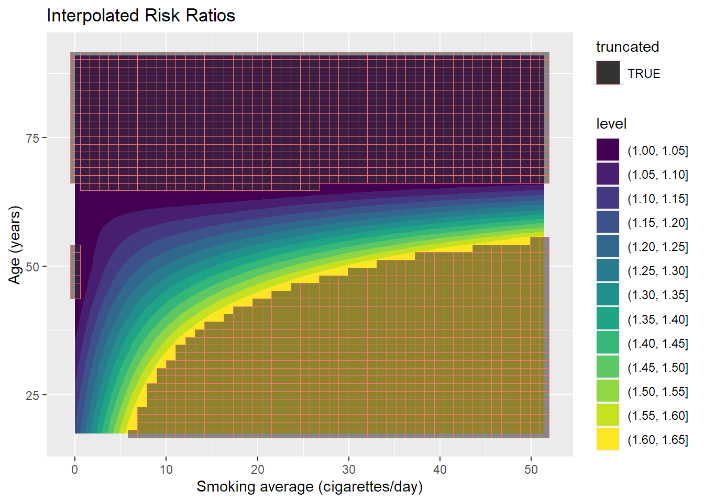
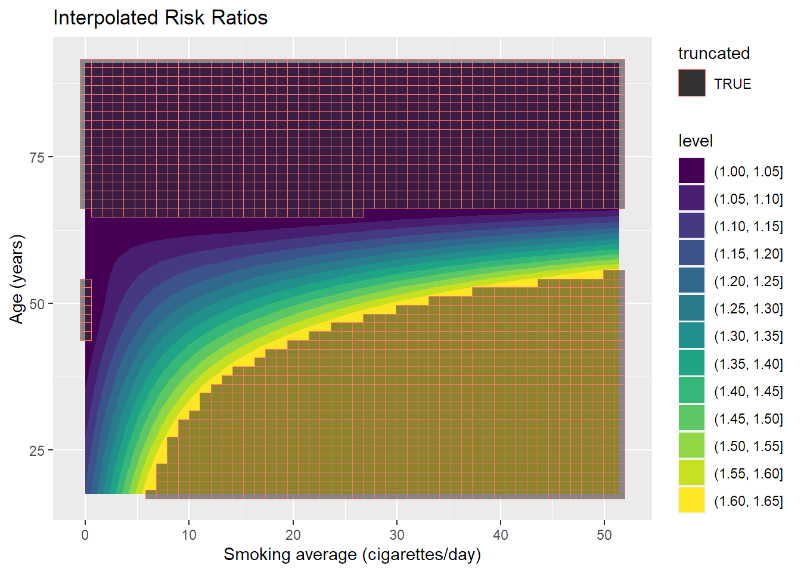
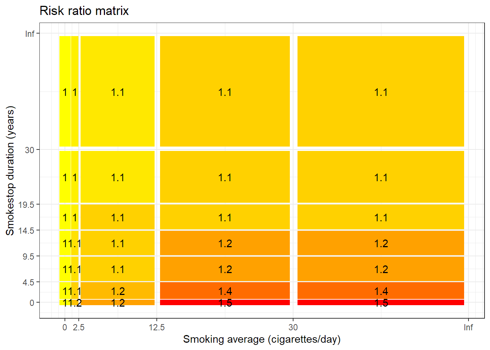
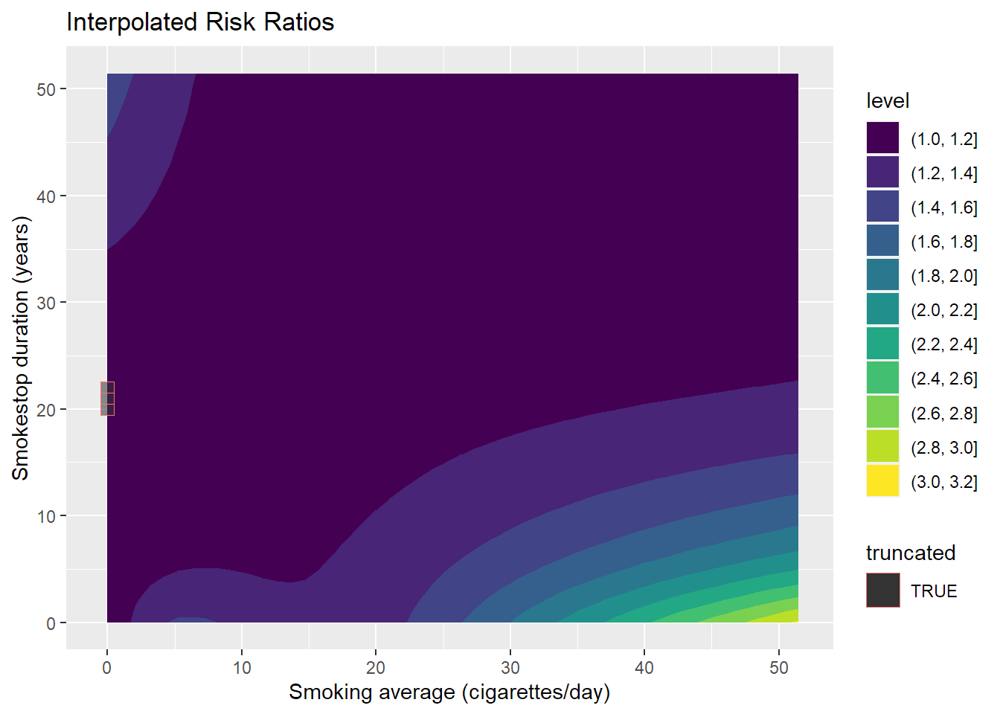
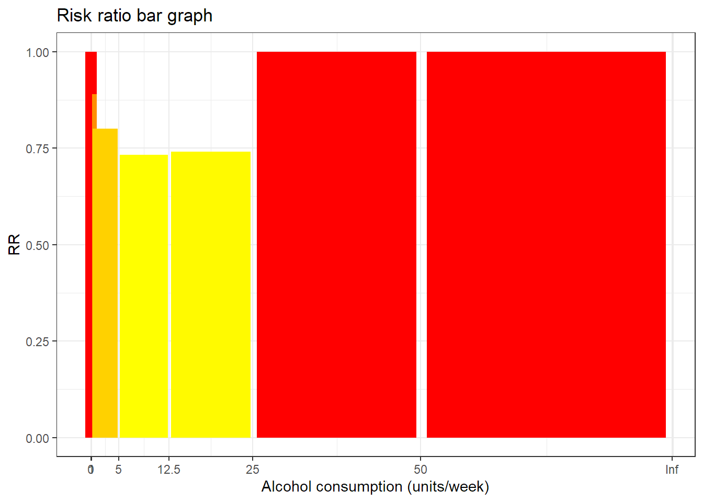
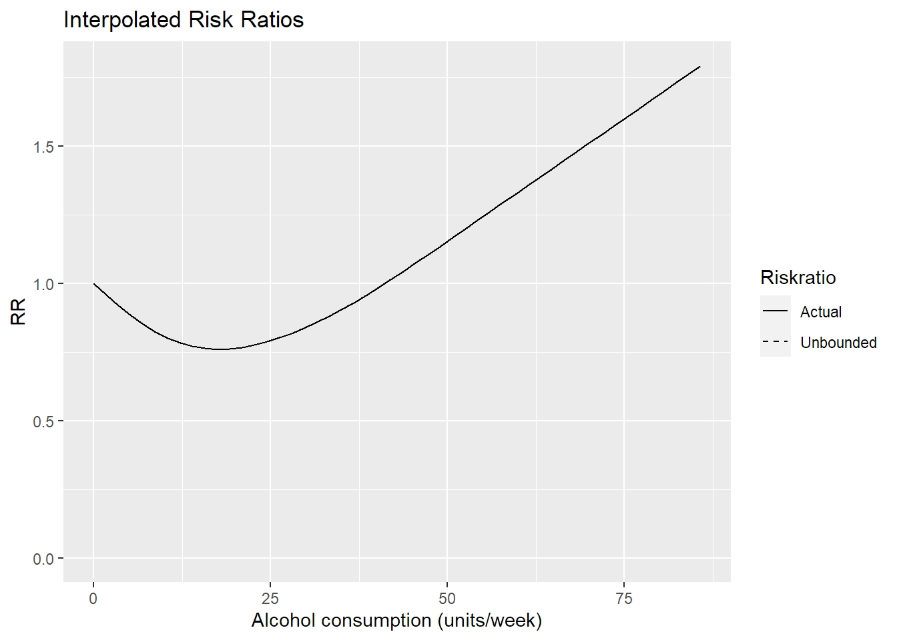
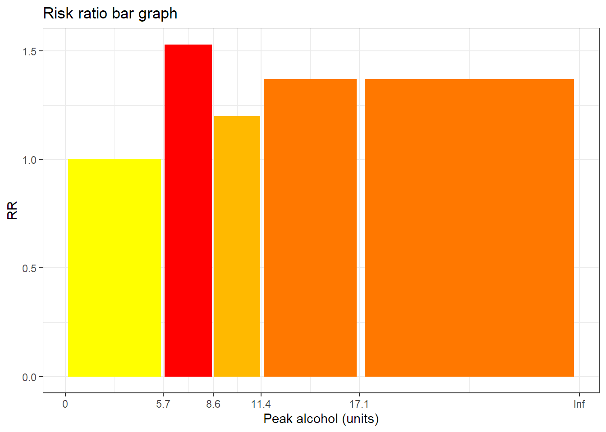

Coronary Heart Disease
test
There are many minor risk factors for ischemic heart disease (also called coronary heart disease). So far we have included the following
Interactions
We assume that some of the factors are dependent on each other but we assume that the interaction between the different types are multiplicative. That means that we multiply the risk ratios for every factor to get the full risk ratio, \(\text{RR}\). \[ \text{RR}=\text{RR}_{\text{smoke amount,age}}\cdot RR_{\text{smoke amount, smoke stop}}\cdot RR_{\text{drinking}}\cdot RR_{\text{max drinking}} \] We also assume that the factors are independent when we compute the normalizing factor. This means that we compute the joint proportions, \(P\), as \[ P= P_{\text{smoke amount,age,smoke stop}} P_{\text{drinking, max drinking}} \]
Coronary Heart Disease: Smoking
We use the meta analysis of cohort studies by Hackshaw et al. (2018) to get age-specific risk ratios for different amounts of smoking. They computed a joint risk ratio using estimates that were adjusted for different other risk factors. Only age was a common adjusting risk factor in all the studies. The meta analysis focused on low-intensity smokers which means that they estimated the risk ratio when smoking just one cigarette per day and this is great because it seems that even a little smoking is harmful to the heart. To take into account smoking cessation we multiplied the numbers from Hackshaw et al. (2018) with the smoking cessation estimates from Shields and Wilkins (2013). Shields and Wilkins (2013) perfectly quantifies the drop in risk ratio of dying from coronary heart disease as more times passes since one stopped smoking, but unfortunately, they have not stratified on amount smoked, but instead put all former smokers in the same category. For us to obtain pseudo-stratified data we do the following. Let
\[ RR_{s,a,t}=RR(\text{smoke amount=s, age=a, time since smoking=t})\\ RR_{s,a,\bullet}=RR(\text{smoke amount=s, age=a})\\ RR^*=RR(\text{smoke amount=0, age=a})=1\\ RR_{\bullet,\bullet,t}=RR(\text{time since smoking=t})\\ \widetilde{RR}_t=RR_{\bullet,\bullet,t}/RR_{\bullet, \bullet,0}\\ \widetilde{RR}_{\infty}=RR(\text{never smoked}) \] where all RR-risk ratios are with respect to never-smokers and the \(\widetilde{RR}\)-risk ratios are with respect to current smokers. The study by (???) contains the values \(RR_{s,a,\bullet}\) and the study by Shields and Wilkins (2013) provides \(\widetilde{RR}_t\) and \(\widetilde{RR}_{\infty}\). Ideally we would We estimate \(RR_{s,a,t}\) by
\[ RR_{s,a,t}=RR^*+(RR_{s,a, \bullet}-RR^*)\cdot \frac{\widetilde{RR}_t-\widetilde{RR}_{\infty}}{\widetilde{RR}_0-\widetilde{RR}_{\infty}} \]
The idea is as follows; as you stop smoking you slowly move from the risk ratio you would have if you still smoked (\(RR_{s,a,\bullet}\)) and towards the risk ratio applicable if you never smoked (\(RR^*\)). However, because the deathcauses framework works best if there are not 3-dimensional tables, we do not combine this to make an actual 3-dimensional table. Instead we keep two tables make the computation
\[ RR_{s,a,t}=\Bigl\{\frac{RR_{s,a, \bullet}}{RR_{s,65,\bullet}}\Bigr\}\cdot \Bigl\{RR^*+(RR_{s,65,\bullet}-RR^*)\cdot \frac{\widetilde{RR}_t-\widetilde{RR}_{\infty}}{\widetilde{RR}_0-\widetilde{RR}_{\infty}}\Bigr\} \] where the first product term is saved in one table and the second product term is saved in another.The price for making this trick was to introduce an artificial standard age - here 65. In practice this means that young former smokers will still receive the age penalty \(\frac{RR_{s,a, \bullet}}{RR_{s,65,\bullet}}\) even though they haven’t smoked in a while.
The raw age penalties (\(\frac{RR_{s,a, \bullet}}{RR_{s,65,\bullet}}\)) are shown below. Be aware that this table only says how much more dangerous it is to smoke when you are young and not how dangerous it is to smoke when you are old.
 

Below is the risk ratios for time since one stopped smoking (Smokestop duration) and the average amount smoked (Smoking average). It is not age adjusted, so it is only for 65-year olds.

Coronary Heart Disease: Drinking
If you drink a moderate amount of alcohol, you decrease the risk of dying from coronary heart disease, but this benefit can be erased from binge drinking (which we call Peak alcohol consumption). Roerecke and Rehm (2014) have made a meta-analysis dose-response curve for alcohol consumption and ischemic heart disease mortalitiy, which we will use. They also show that heavy binge drinking can eliminate the benefit for people with an average alcohol consumption of 1 unit per day. To quantify the binge drinking we use the numbers from Malyutina et al. (2002), which is one of the studies included in the meta analysis of Roerecke and Rehm (2014). Because the study from Malyutina et al. (2002) is not a meta-analysis, it has a higher variance and therefore we can therefore presume that it is reason why the data has a maximum between 5.7 to 8.6 drinks is an artifact. This artifact is smoothed out by our interpolation method.

